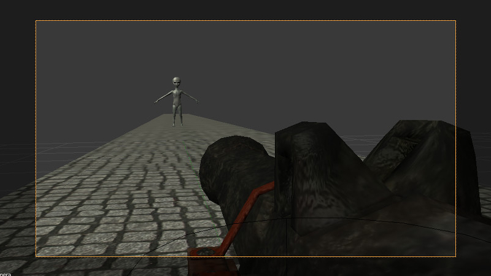

Нелинейная анимация¶
Редактор NLA¶
Редактор нелинейной анимации, имеющийся в программе Blender, позволяет в удобной форме задавать поведение сцены. С его помощью можно реализовать несложные сценарии. Таким образом исключается необходимость программирования простых сцен и приложений.
{kind=link}
Движком поддерживается управление следующими сущностями:
- Любая анимация, параметры которой могут быть представлены с помощью действий (Action)
- Воспроизведение звуков
- Эмиссия частиц (в виде привязки к глобальной шкале времени)
{kind=link}
Использование¶
- Во вкладке
Sceneактивировать панельNLA. - В редакторе
NLA Editorзадать необходимую конфигурацию поведения сцены. - На панели
Timelineвыбрать интервал времени анимации.
Дополнительные настройки¶
Настройка сцены NLA > Cyclic NLA позволяет активировать режим циклической NLA-анимации.
Примечание
Для использования вертексной анимации необходимо выставить опцию “Allow NLA” на панели запекания вертексной анимации.
Ограничения¶
- Одновременное проигрывание различных видов анимации для одного объекта не поддерживается.
Управление через API¶
Для управления нелинейной анимацией через API существует модуль nla.js.
// ...
var m_nla = require("nla");
// ...
m_nla.set_frame(150);
// ...
var frame = m_nla.get_frame();
// ...
m_nla.play();
// ...
m_nla.stop();
// ...
При использовании Logic Editor функции set_frame, play,
stop недоступны.